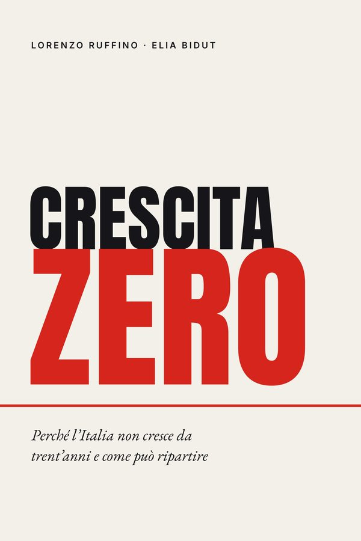

Lorenzo Ruffino
Lavora nell’analisi dei dati. Cura una newsletter in cui risponde, dati alla mano, alle domande che pone l’attualità politica ed economica. Scrive per Pagella Politica e per Focus America.
Perché l’Italia non cresce da trent’anni e come può ripartire
Lorenzo Ruffino · Elia Bidut

Nel 1997 l’Italia riportava il deficit entro il 3 per cento del Pil per entrare nell’euro. Da allora il Pil è cresciuto più del 2 per cento solo in tre anni, due dei quali di rimbalzo dopo la pandemia.
A metà degli anni Novanta il reddito per abitante italiano era superiore di un quarto alla media europea, più alto di quello francese e poco sotto quello tedesco. Tra il 2000 e il 2025 è cresciuto meno che in qualunque altro paese dell’Unione e oggi è sotto la media.
Ogni governo ha promesso di far ripartire l’economia e nessuno ci è riuscito. Intanto il conto è arrivato a chi è venuto dopo: salari reali più bassi di quelli del 2019, affitti fuori portata nelle grandi città, pensioni da pagare con un’economia che non si allarga, servizi pubblici sempre più difficili da finanziare.
Crescita Zero parte dai dati per capire dove la crescita si è inceppata. Il ritardo sta quasi tutto nella produttività: in imprese troppo piccole e gestite con pratiche poco moderne, in un percorso formativo che perde persone a ogni passaggio, in una ricerca che arriva poco a chi produce, in regole che proteggono chi è già sul mercato. Il libro racconta anche come l’Italia ci era riuscita negli anni del miracolo economico e come ne sono usciti paesi che partivano da condizioni peggiori, dalla Svezia all’Australia, dalla Polonia al Canada.
Nella conclusione gli autori indicano da dove ripartire: far crescere le imprese più piccole sfruttando i passaggi di proprietà dei prossimi anni, portare la formazione dove oggi quasi non arriva e darsi regole che durino più di un governo, con un’agenzia per la crescita e alcuni automatismi.
Tornare a crescere si può, ma servono scelte che durino più di un governo.
Nel cartaceo, in formato 6×9 pollici, sono 253 pagine in tutto. Le 755 note, con tutte le fonti, sono anche online, capitolo per capitolo e con un campo di ricerca: leggi le note.
4,90 €
Edizione digitale, per Kindle e per l’app Kindle su telefono, tablet e computer.
Acquista su AmazonIl libro è in vendita in esclusiva su Amazon.
Il libro nasce dagli articoli di CrescitaZero, riscritti, aggiornati e ampliati.
Gli articoli restano online e si leggono gratis: vai alla serie.